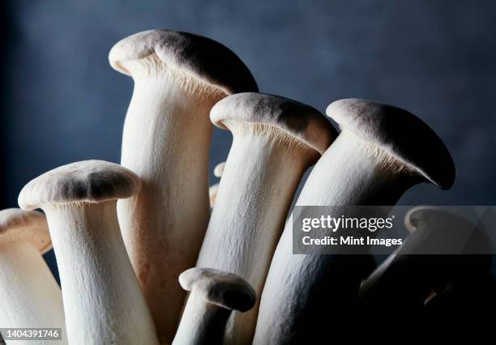

NaI KoDaI

KING OYESTERWhen it comes to gourmet fungi, the King Oyster mushroom (Pleurotus eryngii) reigns supreme. Known for its meaty texture and rich umami flavor, this mushroom is a culinary treasure that’s making waves in kitchens around the world. Whether you're a seasoned chef or a home cook looking to elevate your meals, the King Oyster mushroom is worth your attention. What Makes King Oyster Mushrooms Special?King Oyster mushrooms are notable for their impressive size and distinctive appearance. Their caps are typically smooth and convex, ranging in color from creamy white to deep brown, while their stems are thick and cylindrical, resembling the trunk of a miniature tree. This robust structure gives them a hearty texture that holds up well in various cooking methods, from grilling to stir-frying. The flavor profile of King Oyster mushrooms is another reason they’ve earned their royal title. They offer a subtle, yet rich, umami taste that adds depth to dishes. Their flavor is often described as earthy and slightly sweet, with a savory undertone that enhances the overall taste of a meal without overpowering other ingredients. Culinary Uses and RecipesOne of the standout features of King Oyster mushrooms is their versatility in the kitchen. Their firm texture makes them an excellent substitute for meat in vegetarian and vegan dishes. Try slicing them into thick strips and grilling them for a smoky, satisfying texture. Alternatively, you can shred them to mimic the texture of pulled pork or chicken, perfect for tacos or sandwiches. Nutritional BenefitsBeyond their culinary appeal, King Oyster mushrooms offer several nutritional benefits. They are a good source of protein, fiber, and essential vitamins and minerals, including B vitamins, potassium, and antioxidants. These nutrients contribute to overall health and well-being, making King Oyster mushrooms a nutritious addition to a balanced diet. |
 |
FOLLOW US ON THE WEB